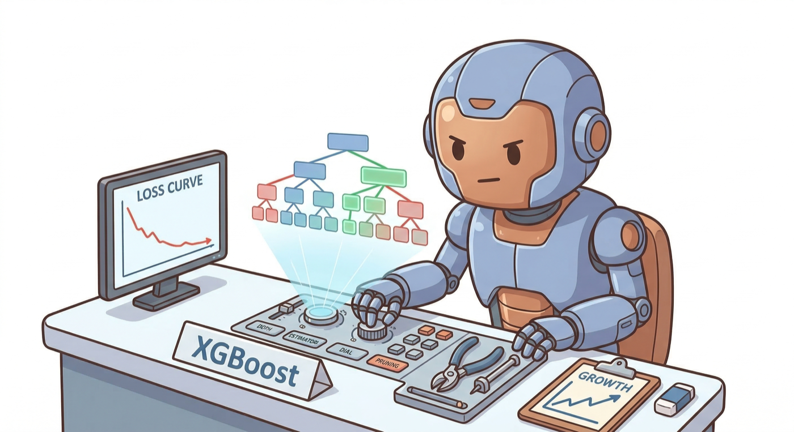

Tuning XGBoost

neuropt works with any sklearn-compatible model out of the box. Give it an estimator and a training function — it discovers the tunable parameters, asks the LLM for reasonable search ranges, and optimizes.
Quickstart
# train.py
from sklearn.datasets import load_breast_cancer
from sklearn.model_selection import train_test_split
from xgboost import XGBClassifier
X, y = load_breast_cancer(return_X_y=True)
X_train, X_val, y_train, y_val = train_test_split(X, y, test_size=0.2, random_state=42)
model = XGBClassifier(verbosity=0)
def train_fn(config):
m = config["model"]
m.fit(X_train, y_train, eval_set=[(X_train, y_train), (X_val, y_val)], verbose=False)
results = m.evals_result()
return {
"score": results["validation_1"]["logloss"][-1],
"train_losses": results["validation_0"]["logloss"],
"val_losses": results["validation_1"]["logloss"],
}
That's it. neuropt calls model.get_params(), sees 20+ parameters, filters to the ones worth tuning, and asks the LLM for ranges. You don't need to know what reg_alpha or colsample_bytree should be.
What happens under the hood
- Introspection — neuropt calls
get_params()on your XGBClassifier and gets all parameters + current values - Range selection — the LLM is asked: "for an XGBClassifier, what are sensible search ranges for each parameter?" It returns ranges like
learning_rate: log_float [0.001, 0.3]andmax_depth: int [3, 12] - Search loop — each iteration, the LLM reads the per-round loss curves and proposes new configs
- Model cloning — each experiment gets a fresh
clone()of your model with the new params applied viaset_params()
If the LLM backend isn't available, neuropt falls back to hardcoded ranges for common XGBoost/LightGBM/sklearn parameters.
What the LLM sees
XGBoost's evals_result() gives per-round train and validation loss — this maps directly to train_losses and val_losses. The LLM can see patterns like:
- Overfitting: train loss keeps dropping but val loss flattens or rises → needs more regularization (
reg_alpha,reg_lambda, lowermax_depth) - Underfitting: both losses plateau high → less regularization, more
n_estimators, higherlearning_rate - Early convergence: val loss stops improving after 50 rounds but
n_estimators=500→ wasting compute
Parameters typically searched
When you pass an XGBClassifier, neuropt will typically search over:
| Parameter | What it controls |
|---|---|
learning_rate |
Step size shrinkage (log scale, 0.001–0.3) |
max_depth |
Tree depth (3–12) |
n_estimators |
Number of boosting rounds (50–500) |
min_child_weight |
Minimum leaf weight (1–10) |
subsample |
Row sampling ratio (0.5–1.0) |
colsample_bytree |
Column sampling ratio (0.5–1.0) |
reg_alpha |
L1 regularization (log scale) |
reg_lambda |
L2 regularization (log scale) |
gamma |
Min split loss (log scale) |
Parameters like random_state, n_jobs, verbosity, and objective are automatically skipped.
Works with other sklearn models too
The same from_model pattern works with LightGBM, RandomForest, GradientBoosting, and any estimator that has get_params() / set_params():
from sklearn.ensemble import RandomForestClassifier
model = RandomForestClassifier()
def train_fn(config):
m = config["model"]
m.fit(X_train, y_train)
accuracy = m.score(X_val, y_val)
return {"score": 1 - accuracy} # lower is better